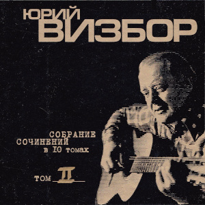

Белый пароходик
- Здравствуй, белый пароходик, Увези меня отсюда В край, куда ничто не ходит - Ни машины, ни верблюды, Где кончаются концерты, Не снимаются картины, Где играют с чистым сердцем Синебокие дельфины. - Здравствуй, мальчик на причале, здравствуй, мальчик поседевший, расскажи ты мне вначале, что там в мире надоевшем. Я один, по мне топочут ноги, ноги, грузы, грузы. у спины моей хлопочут невесёлые медузы. - Что там в мире? - Всё как было, только ветры стали злее, только солнце чуть остыло, только вымокли аллеи… - Я один, по мне топочут ночи, ночи, муки, муки. За спиной моей хлопочут ненадёжнейшие руки. Грустный мальчик, до свиданья, не возьму тебя с собою. Где-то слышатся рыданья над нелепою судьбою. Размножает громкий рупор расфальшивые романсы, и выходит с шуткой глупой человек для конферанса. - Пароходик мой любимый, что же ты сказал такое? Не плыви куда-то мимо, я хочу в страну покоя… - Грустный мальчик, я ведь тёртый, тёртый берегом и морем, я плыву от порта к порту, я иду от горя к горю.
— 1971
Деньги
Теперь толкуют о деньгах В любых заброшенных снегах, В портах, постелях, поездах, Под всяким мелким зодиаком. Тот век рассыпался, как мел, Который словом жить умел, Что начиналось с буквы "Л", Заканчиваясь мягким знаком. О, жгучий взгляд из-под бровей! Листанье сборника кровей! Что было содержаньем дней, То стало приложеньем вроде, Вот новоявленный Моцарт, Сродни менялам и купцам, Забыв про двор, где ждут сердца, К двору монетному подходит. Все на продажу понеслось, И что продать, увы, нашлось: В цене все то, что удалось, И спрос не сходит на интриги. Явились всюду чудеса, Рубли раздув, как паруса, И рыцарские голоса Смехоподобны, как вериги. Моя надежда на того, Кто, не присвоив ничего, Свое святое естество Сберег в дворцах или в бараках, Кто посреди обычных дел За словом следовать посмел, Что начиналось с буквы "Л", Заканчиваясь мягким знаком.
— 21 мая 1982
В Аркашиной квартире
В Аркашиной квартире живут чужие люди, Ни Юли, ни Аркаши давно в тех стенах нет, Там также не сижу я с картошечкой в мундире, И вовсе не Аркашин горит на кухне свет. Неужто эти годы прошли на самом деле? Пока мы разбирались: кто теща, кто свекровь? Куда же мы глядели, покуда все галдели, И бойко рифмовали слова "Любовь" и "Кровь". В Аркашиной квартире бывали эти рифмы Не в виде сочинений, но в виде высоты, Там даже красовалась неясным лагорифмом Абстрактная картина для общей красоты. Нам это все досталось не в качестве наживы, И был неповторимым наш грошевой уют, Ах, славу Богу, братцы, что все мы вроде живы, И все, что мы имеем, уже не украдут. Мы были так богаты чужой и общей болью, Наивною моралью, желаньем петь да петь. Все это оплатили любовью мы и кровью, Не дай нам Бог, ребята, в дальнейшем обеднеть. В Аркашиной квартире все бродят наши тени, На кухне выпивают и курят у окна… Абстрактная картина, судеб переплетенье, И так несправедливо, что жизнь у нас одна.
— Август 1979
Католическая церковь
Вот прекрасная оценка Наших бедствий на бегу - Католическая церковь На высоком берегу. Что-то светлое так манит Через темное окно - Католическая пани, Словно белое вино. Католичка - не простая, А загадочная сплошь - Назидательно листает Католическую ложь. "О мой друг, я понимаю, Ваше чувство не ново. Я внимательно внимаю, Но не более того". А потом в траве пожухлой Мы лежали у сосны, Было тихо, было жутко От такой голубизны. И с тех пор одна зацепка: Разыскать я не могу Католическую церковь На высоком берегу. Что ни баба - то промашка, Что ни камень- то скала: Видно, черная монашка Мне дорогу перешла. Дай мне Бог держаться цепко, Подари мне сквозь пургу Католическую церковь На высоком берегу.
— 1970
Солнце за гору заходит
Вот и начинается беда, Если что - так это мне всегда. Солнце за гору заходит, Черва к черве не приходит, Через час настанут холода. На горе сижу я как на пне, Если невезуха - это мне. Солнце за гору заходит, Пика к пике не приходит Через час настанут холода. А товарищ "Примою" дымит, Все переживает, аж кряхтит. Солнце за гору заходит, Трефа к трефе не приходит, Через час настанут холода. В небе зажигается звезда, Где-то жмут ночные поезда. Солнце за гору заходит, Быстро жизнь моя проходит, Через час настанут холода.
— 9 июля 1977
Не жалейте меня
В то лето шли дожди, и плакала погода, Над тем, что впереди не виделось исхода, И в стареньком плаще среди людей по лужам, Как будто средь вещей шагал я неуклюже. Не жалейте меня, не жалейте, Что теперь говорить, чья вина?… Вы вино по стаканам разлейте И скажите: "Привет, старина!" В кровь израненные именами Выпьем, братцы, теперь без прикрас Мы за женщин, оставленных нами, И за женщин, оставивших нас. В то лето шли дожди, и рушились надежды, Что бог нас наградит за преданность и нежность, Что спилим эту муть - гнилые ветви сада, Что все когда-нибудь устроится как надо. В то лето шли дожди, и было очень сыро, В то лето впереди лишь осень нам светила, Но пряталась одна банальная мыслишка : Грядущая весна - неначатая книжка.
— 15 июля 1976
Авто
Увы, мои друзья, Уж поздно стать пилотом, Балетною звездой, Художником Дали, Но можно сесть в авто С разбитым катафотом, Чтоб повидать все то, Что видится вдали. Итак, мы просто так Летим по поворотам, Наивные гонцы Высоких скоростей. На миг сверкнет авто С разбитым катафотом, В серебряном шару Росинки на листе. А может, приступить К невиданным полетам? И руль легко идет К коленям, как штурвал, И вот летит авто С разбитым катафотом Там, где еще никто Ни разу не летал! Как просто, черт возьми, С себя стряхнуть болото, До солнца долететь И возродиться вновь - Вот дом мой, вот авто С разбитым катафотом, Вот старые друзья, А вот моя любовь! Но я спускаюсь вниз. Пардон. Сигналит кто-то, Мне - левый поворот На стрелку и домой. Вплетается Пегас С разбитым катафотом В табун чужих коней, Как в старое ярмо.
— 1983
А будет это так
А будет это так: заплачет ночь дискантом, И ржавый ломкий лист зацепит за луну, И белый-белый снег падет с небес десантом, Чтоб черным городам придать голубизну. Чтоб черным городам придать голубизну. И тучи набегут, созвездьями гонимы. Поднимем воротник, как парус декабря, И старый-старый пес с глазами пилигрима Закинет морду вверх при желтых фонарях. Друзья мои, друзья, начать бы все сначала, На влажных берегах разбить свои шатры, Валяться б на досках нагретого причала И видеть, как дымят далекие костры. Еще придет зима в созвездии удачи, И легкая лыжня помчится от дверей, И, может быть, тогда удастся нам иначе, Иначе, чем теперь, прожить остаток дней.
— 21 ноября 1975
Когда придет мой пароход
Мой дальний порт туманы стерегут. Приходят пароходы и уходят, Они в морях призвание находят, Лишь только я стою на берегу. Я жду один знакомый силуэт, Мой час еще не пробил, дорогие, Уходят в море разные другие, Лишь только для меня отхода нет. Когда ж придет мой пароход, пусть не спеша, Который голубой весь, не иначе, А на борту написано - "Удача". А на корме сигнал - "Не обижайте малыша". На пароходе маленьком моем Матросы-удальцы и кавалеры, А если веселы они не в меру, То это дело мы переживем. Переживем туманы мы и лед, Я сам поставлю паруса надежды, Чтоб было так, как не бывало прежде, Чтобы скорей пришло то, что придет. Плыви, мой пароход, плыви скорей, Куда другие и не заплывают, Их компасы неправильны бывают, В широтах, мной придуманных морей. Они на карты не нанесены И в лоциях морей тех самых нету, Но, не смотря, товарищи, на это, В них многие бывали спасены. Когда ж придет мой пароход, Который голубой весь, не иначе, А на борту написано - "Удача". А на корме написано - "Ребята, полный ход!"
— 30 июля 1977
Вот уходит наше время
Вот уходит наше время, Вот редеет наше племя, Время кружится над всеми Легкомысленно, как снег, На ребячьей скачет ножке, На игрушечном коне По тропинке, по дорожке, По ромашкам, по лыжне. И пока оно уходит, Ничего не происходит. Солнце за гору заходит, Оставляя нас луне. Мы глядим за ним в окошко, Видим белый след саней, На тропинке, на дорожке, На ромашках, на лыжне. Все что было, то и было, И, представьте, было мило. Все, что память не забыла, Повышается в цене. Мы надеемся немножко, Что вернется все к весне По тропинке, по дорожке, По растаявшей лыжне. Мы-то тайно полагаем, Что не в первый раз шагаем, Что за этим черным гаем Будто ждет нас новый лес, Что уйдем мы понарошку, Сменим скрипку на кларнет И, играя на дорожке, Мы продолжим на лыжне…
— 2-9 февраля 1982
Одинокий гитарист
Одинокий гитарист в придорожном ресторане. Черной свечкой кипарис между звездами в окне. Он играет и поет, сидя будто в черной раме, Море черное за ним при прожекторной луне. Наш милейший рулевой на дороге нелюдимой, Исстрадав без сигарет, сделал этот поворот. Ах, удача, Боже мой, услыхать в стране родимой Человеческую речь в изложеньи нежных нот. Ресторан полупустой. Две танцующие пары. Два дружинника сидят, обеспечивая мир. Одинокий гитарист с добрым Генделем на пару Поднимает к небесам этот маленький трактир. И витает, как дымок, христианская идея, Что когда-то повезет, если вдруг не повезло, Он играет и поет, все надеясь и надеясь, Что когда-нибудь добро победит в борьбе со злом. Ах, как трудно будет нам, если мы ему поверим… С этим веком наш роман бессердечен и нечист, Но спасает нас в ночи от позорного безверья Колокольчик под дугой - одинокий гитарист.
— 18-19 января 1982
Струна и кисть
А в юности куда нас не несло! В какие мы не забредали воды! Но время громких свадеб истекло, Сменившись гордым временем разводов. Струна, и кисть, и вечное перо - Нам вечные на этом свете братья! Из всех ремесел воспоем добро, Из всех ремесел воспоем добро! Из всех объятий - детские объятья. С годами развелись мы насовсем С тем, что казалось тенью золотою, А оказалось, в сущности, ничем - Участием во всем и суетою. Но нас сопровождают, как пажи, Река, и лес, и лист, под ноги павший, Прощающие нам всю нашу жизнь С терпеньем близких родственников наших. И странно - но нисходит благодать От грустного времен передвиженья, Когда уж легче песню написать, Чем описать процесс стихосложенья. Мы делали работу как могли, Чего бы там про нас ни говорили, Мы даже отрывались от земли И в этом совершенство находили. Струна, и кисть, и вечное перо - Нам вечные на этом свете братья! Из всех ремесел воспоем добро, Из всех объятий - детские объятья.
— 1 апреля 1981
Сорокалетье
Нас исполняет музыка по лицам, Нас исполняют судьбы как по нотам, Записанным в нестойкие страницы Каким-то все напутавшим Фаготом. В тех нотах есть живущие фигуры И те, кто попрощались, улетая, Но в самой середине партитуры Есть наша с вами песенка простая. Смотрите, не забудьте позвонить, В тот час, когда настанет непогода, Какое б ни случилось время года, Чтоб этот час нам вместе пережить. Смотрите, догадайтесь промолчать, Когда нахлынет небо голубое, Чтоб эта мысль явилась нам обоим - Друг друга ненароком повстречать. В наш век всему простому мало места, Из старого лишь моден перстень старый. Я сам поклонник джазовых оркестров, Но верю в семиструнную гитару. И верю, что разлука есть потеря, Что честь должна быть спасена мгновенно. Я вас люблю. Я в это тоже верю, Хоть это, говорят, несовременно. Смотрите, не забудьте позвонить, В тот час, когда настанет непогода, Какое б ни случилось время года, Чтоб этот час нам вместе пережить. Смотрите, догадайтесь промолчать, Когда нахлынет небо голубое, Чтоб эта мысль явилась нам обоим - Друг друга ненароком повстречать. Что было, то забудется едва ли. Сорокалетье взяв за середину, Мы постоим на этом перевале И тихо двинем в новую долину. Там каждый шаг дороже ровно вдвое, Там в счет идет что раньше не считалось, Там нам, моя любимая, с тобою Еще вторая молодость осталась.
Безбожники
На проезжей на дороженьке, Что приводит в старый Рим, Повстречалися безбожники Трем спасителям святым, И у древней у обители, Над которой херувим, Говорили те спасители Тем безбожникам худым: "Бросьте вы свои идеюшки, Да беритесь за кресты. Сдайте дядьке Иудеюшке Запрещенные листы, Да идите по дороженьке, Что приводит в старый Рим, Ну, а в Риме мы, безбожники, По душам поговорим". И ответили безбожники: "Не сдаемся мы живьем, А мы - свободные художники, И без бога проживем, Мы - не громкоговорители, Не живем мы на заказ, До свидания, спасители, Помолитеся за нас".
— 1965
Ночная дорога
Нет мудрее и прекрасней средства от тревог, Чем ночная песня шин, Длинной-длинной серой ниткой стоптанных дорог Штопаем ранения души. Не верь разлукам, старина: их круг - Лишь сон, ей-богу. Придут другие времена, мой друг, - Ты верь в дорогу. Нет дороге окончанья, есть зато ее итог. Дороги трудны, но хуже без дорог, Будто чья-то сигарета, стоп-сигнал в ночах - Кто-то тоже держит путь. Незнакомец, незнакомка, здравствуй и прощай… Можно только фарами мигнуть. Не верь разлукам, старина: их круг - Лишь сон, ей-богу. Придут другие времена, мой друг, - Ты верь в дорогу. Нет дороге окончанья, есть зато ее итог. Дороги трудны, но хуже без дорог, То повиснет над мотором ранняя звезда, То на стекла брызнет дождь… За спиною остаются два твоих следа - Значит, не бесследно ты живешь. Не верь разлукам, старина: их круг - Лишь сон, ей-богу. Придут другие времена, мой друг, - Ты верь в дорогу. Нет дороге окончанья, есть зато ее итог. Дороги трудны, но хуже без дорог, В два конца идет дорога, но себе не лги: Нам в обратный путь нельзя. Слава богу, мой дружище, есть у нас враги - Значит, есть, наверно, и друзья. Не верь разлукам, старина: их круг - Лишь сон, ей-богу. Придут другие времена, мой друг, - Ты верь в дорогу. Нет дороге окончанья, есть зато ее итог. Дороги трудны, но хуже без дорог,
— 1 августа 1973
Манеж
Когда кончается сезон удачи, И ветер, как афиши, рвет Последние листы надежды. Когда сложилось так, а не иначе То, значит, время грим снимать И пересматривать одежды. Просто жизнь моя – манеж , Белый круг со всех сторон освещенный, Просто жизнь моя – манеж, На коварство и любовь обреченный, Ветер сумеречный свеж, Подарите мне любовь, подарите… Просто жизнь моя – манеж, Ну, а вы, мой друг, мне кажется, зритель. Когда бы жизнь свою я начал снова, В ней были б горы и моря, Ну, и немножечко успеха, В ней были б ты, да я, да шум сосновый, А остальное подождет, А остальное мне не к спеху. Но все же я на вас гляжу с надеждой. Хотя наивно это все, я это ясно понимаю… И все-таки, надежде той внимаю, Поскольку очень в вас люблю, Как не любил ни разу прежде. Просто жизнь моя - манеж, Белый круг со всех сторон освещенный, Просто жизнь моя - манеж, На коварство и любовь обреченный, Ветер сумеречный свеж, Не дарите мне надежд, не дарите! Просто жизнь моя – манеж, Ну, а вы, мой друг, мне кажется, зритель.